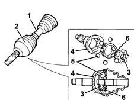
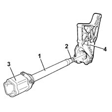

Specifications
- Path
- Descriptions > 27 AXLE > Specifications
- Kind
- system description
- Applies to
- all engines; all production periods
- Interactive page
- https://sloeber94.github.io/elrnDB-lThss/en/#/74156
Applies to: all engines; all production periods
The driveshafts (1), made from high resistance steel, have splined ends in order to allow them to be matched with the constant velocity joints (2)
The constant velocity joints consist of an inner "drive" core (3) on an input shaft and an outer "driven" casing (4) which is the joint output element.
The inner core has six spherical splines on its outer surface which house the same number of balls (5) kept in place by a special chamber (6).

The intermediate shaft (1), made from high resistance steel, connect the differential with the right driveshaft by means of the splined end (2) and the flange (3).
In order to limit the projection between the mounting points, the intermediate shaft is suppported by a special support (4) which, depending on the version, also performs other functions (e.g. engine support, oil filter mounting etc.).
